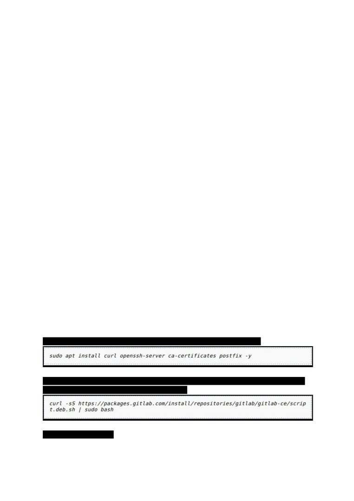
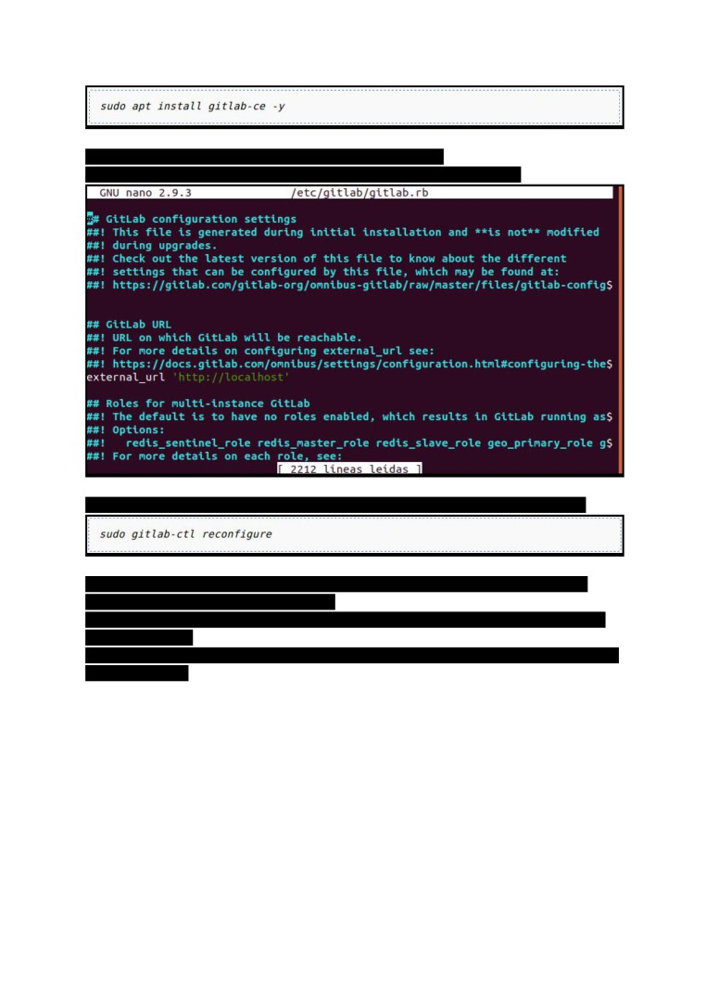
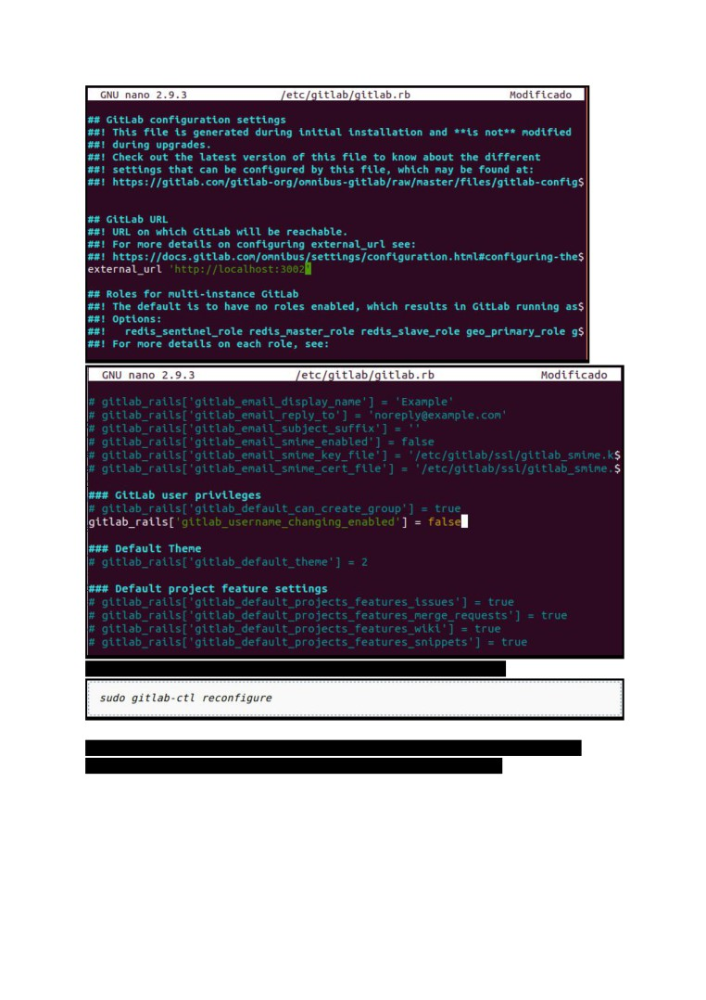
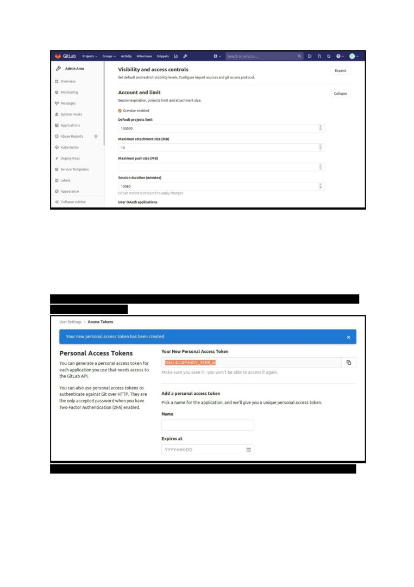
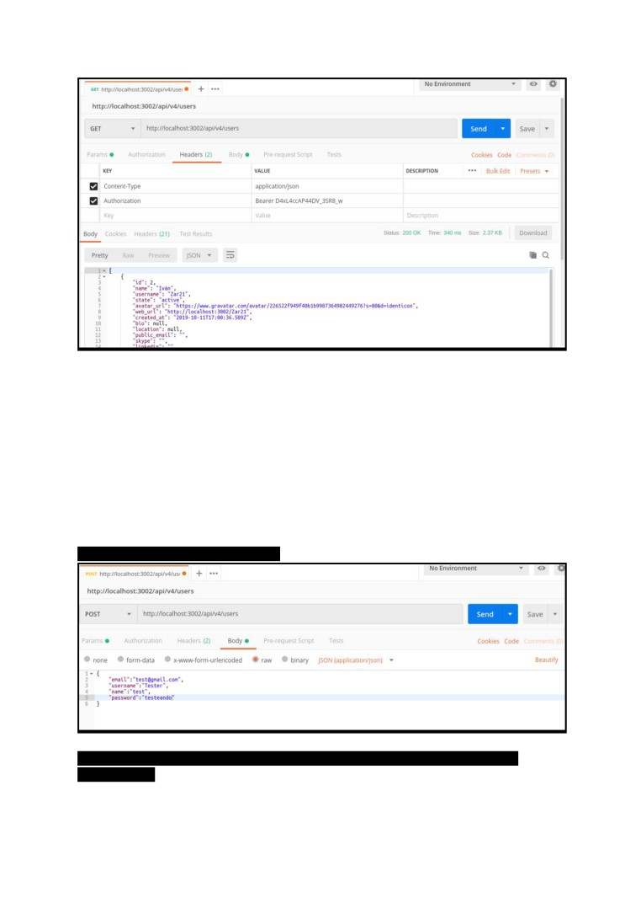
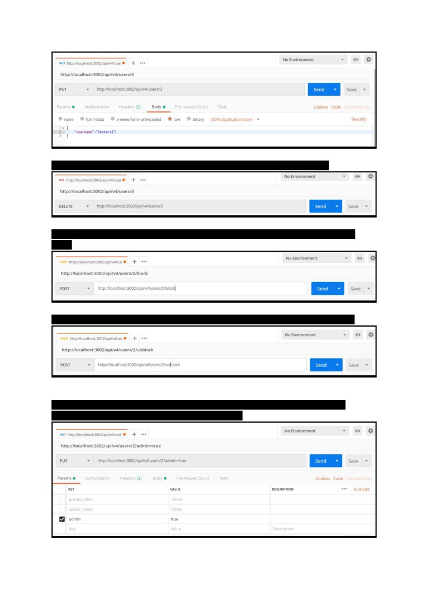
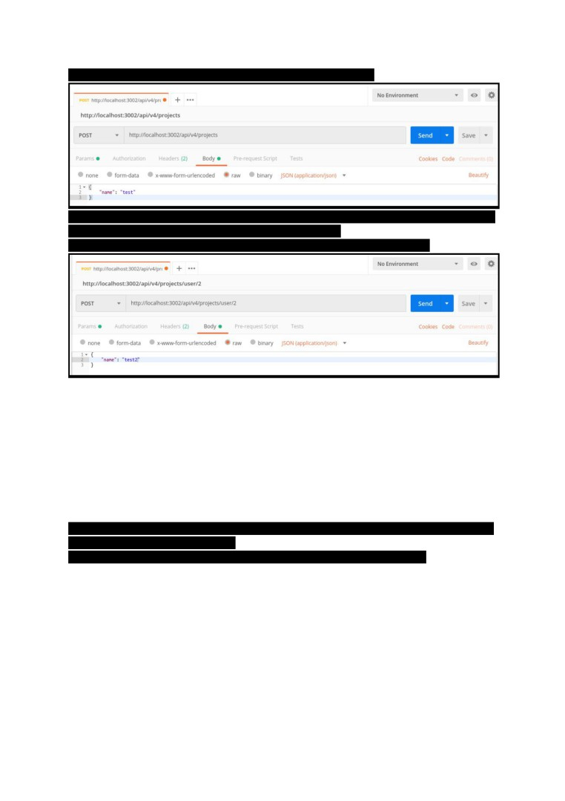
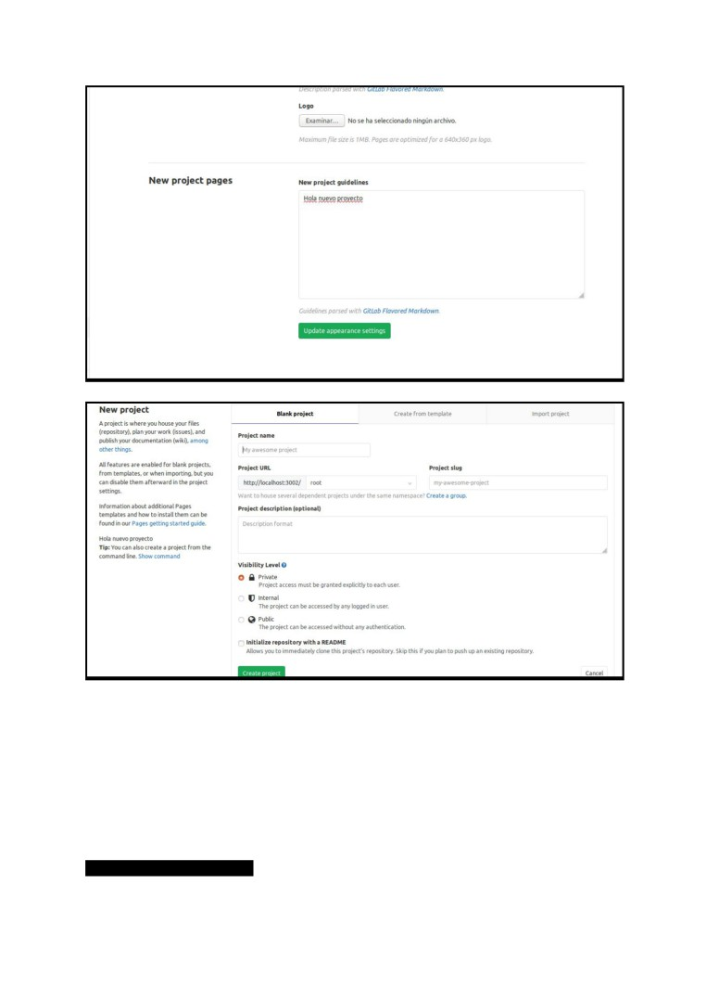
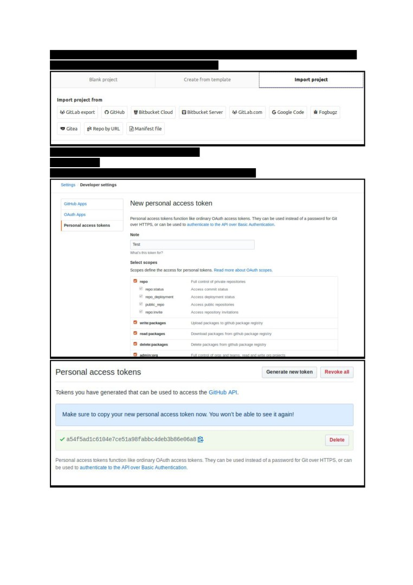
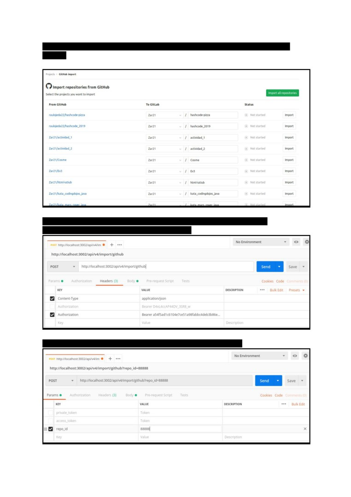

Despliegue de aplicaciones Web
UD 2. SISTEMAS DE CONTROL DE VERSIONES
PRACTICA 1.
Crear y gestionar nuestro servidor de Git
GitLab nació en 2011 como un proyecto dentro de GitHub y con el tiempo, evolucionó para
convertirse en una alternativa que proporciona repositorios privados de código gratuitos
(cosa
que GitHub sólo ofrece en su modo de pago) mediante una interfaz muy ligera y simple.
La tarea a realizar en esta práctica consistirá en elaborar un documento (presentado a
través
de GitHub Pages o GitLab Pages) en el que especifiquéis los pasos a realizar para:
- (2 puntos) Instalar GitLab en local permitiéndonos disponer de un repositorio Git
propio en nuestra máquina.
- (1 punto) Realizar labores de administración inicial como por ejemplo:
o Cambiar el puerto de acceso.
o Impedir que usuarios nuevos puedan modificar su identificador.
o Modificar el tiempo de expiración de la sesión.
- (2 puntos) Detallar ejemplos de procesos (vía llamadas a la API) como:
o Alta, modificación y borrado de usuarios.
o Bloqueo/desbloqueo de usuarios.
o Establecer usuario como administrador.
o Creación de proyectos.
- (1 punto) Realizar labores de customización como por ejemplo:
o Modificar la página de creación de un nuevo proyecto.
o Modificar el logo y la descripción de la pantalla de login.
o Modificar el favicon de gitlab.
- (2 puntos) Detallar el proceso para poder importar proyectos de GitHub a nuestro
GitLab tanto por pantalla como utilizando la API.
- (2 puntos) Documentación correcta en GitHub Pages o GitLab Pages.
Lo primero que tenemos que hacer es instalar las dependencias de GitLab:
Cuando tengamos las dependencias correctamente instaladas ya podemos instalar GitLab
Añadimos el repositorio de GitLab media este curl
Y instalamos el gitlab-ce

Entramos al fichero /etc/gitlab/gitlab.rb y cambiamos el campo
external_url por el dominio que vayamos a usar (En nuestro caso localhost)
Ahora ejecutamos el siguiente comando para que se aplique la conficuración realizada
Ahora accedemos a localhost o al dominio que hayas introduccido y veras una pantalla
donde te pedira crear la contraseña de root
Despues de crear la contraseña de root podras registrar a un nuevo usuario y disponer de
una cuenta propia.
Para modificar el puerto y restringir a los usuarios el cambio de username debemos cambiar
el fichero gitlab.rb

Cuando tengamos los cambios realizados debemos ejecutar el comando
Podemos modificar el tiempo de expiración de la sesion entrando en la cuenta root de
nuestro GitLab, entrando a admin area, en settings, en account and limit

Para poder usar la api lo primero que vamos a necesitar es generar un access token desde
los settings del usuario
Gracias a este token podemos por ejemplo obtener todos los usuarios que hay en el gitlab

Usando la api podemos crear usuarios
Tambien modificar usuarios (Hay que especificar que usuario se tiene que modificar
mediante el id)

Y finalmente borrar usuarios (Igual que al modificarlos hay que especificar el id)
Para bloquear un usuario debemos especificar el id en la ruta y añadir despues de el id
/block
Para desbloquear lo mismo que cuando bloqueamos pero tenemos que poner /unblock
Para pasar un usuario a admin debemos actualizar el parametro is_admin usando el
parametro admin=true en una peticion sobre el usuario

Podemos tambien crear proyectos desde la api mediante /projects
En esta captura creo un nuevo proyecto solo poniendole en nombre que va a tener. Si no se
especifica usuario se atribuye directamente al usuario root.
Para crear un proyecto para un usuario debemos agregar la ruta /user/:id-user
Para modificar la apariencia de la pagina debemos acceder desde un usuario administrados
a la admin area y entra a apperance
En este ejemplo modifico la apariencia de la pagina de creación de proyectos

Tambien podemos modificar:

Para importar un proyecto de github a gitlab debemos entrar a crear un nuevo proyecto y a
importar proyecto ahi debemos seleccionar github
Necesitamos generar un token desde github
IMPORTANTE
El mail tiene que ser el mismo tanto en github como en gitlab

Al acceder con el token en gitlab veremos todos los proyectos de github que podemos
importar
Para realizar una importacion desde la api debemos usar la ruta /import/github
Hay que añadir el token que hemos generado antes
Tambien hay que añadir el id del repositorio con el parametro repo_id